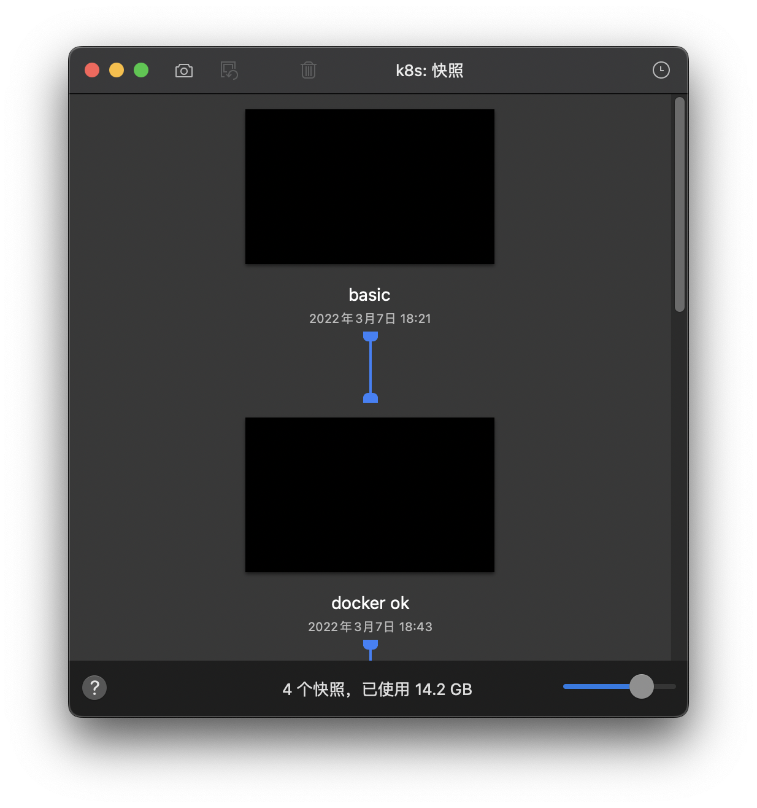

- 00 开篇词 迎难而上，做云原生时代的弄潮儿.md.html
- 00 课前准备 动手实践才是最好的学习方式.md.html
- 01 初识容器：万事开头难.md.html
- 02 被隔离的进程：一起来看看容器的本质.md.html
- 03 容器化的应用：会了这些你就是Docker高手.md.html
- 04 创建容器镜像：如何编写正确、高效的Dockerfile.md.html
- 05 镜像仓库：该怎样用好Docker Hub这个宝藏.md.html
- 06 打破次元壁：容器该如何与外界互联互通.md.html
- 07 实战演练：玩转Docker.md.html
- 08 视频：入门篇实操总结.md.html
- 09 走近云原生：如何在本机搭建小巧完备的Kubernetes环境.md.html
- 10 自动化的运维管理：探究Kubernetes工作机制的奥秘.md.html
- 11 YAML：Kubernetes世界里的通用语.md.html
- 12 Pod：如何理解这个Kubernetes里最核心的概念？.md.html
- 13 Job_CronJob：为什么不直接用Pod来处理业务？.md.html
- 14 ConfigMap_Secret：怎样配置、定制我的应用.md.html
- 15 实战演练：玩转Kubernetes（1）.md.html
- 16 视频：初级篇实操总结.md.html
- 17 更真实的云原生：实际搭建多节点的Kubernetes集群.md.html
- 18 Deployment：让应用永不宕机.md.html
- 19 Daemonset：忠实可靠的看门狗.md.html
- 20 Service：微服务架构的应对之道.md.html
- 21 Ingress：集群进出流量的总管.md.html
- 22 实战演练：玩转Kubernetes（2）.md.html
- 23 视频：中级篇实操总结.md.html
- 24 PersistentVolume：怎么解决数据持久化的难题？.md.html
- 25 PersistentVolume + NFS：怎么使用网络共享存储？.md.html
- 26 StatefulSet：怎么管理有状态的应用？.md.html
- 27 滚动更新：如何做到平滑的应用升级降级？.md.html
- 28 应用保障：如何让Pod运行得更健康？.md.html
- 29 集群管理：如何用名字空间分隔系统资源？.md.html
- 30 系统监控：如何使用Metrics Server和Prometheus？.md.html
- 31 网络通信：CNI是怎么回事？又是怎么工作的？.md.html
- 32 实战演练：玩转Kubernetes（3）.md.html
- 33 视频：高级篇实操总结.md.html
- 加餐 docker-compose：单机环境下的容器编排工具.md.html
- 加餐 谈谈Kong Ingress Controller.md.html
- 结束语 是终点，更是起点.md.html
- 捐赠
00 课前准备 动手实践才是最好的学习方式
你好，我是Chrono，今天我们的任务是搭建实验环境。
如果你看过我的另外两个极客时间专栏（《透视HTTP协议》和《C++实战笔记》）就会知道，我一直都很强调实验环境的重要程度，毕竟计算机这门学科的实践性要大于理论性，而且有一个能够上手操作的实际环境，对学习理论也非常有帮助。
落到我们的这个Kubernetes学习课上，实验环境更是必不可少的，因为和网络协议、编程语言不同，Kubernetes是一个更贴近于生产环境的庞大系统，如果“光说不练”，即使你掌握了再多的知识，但不能和实际相结合，也只能是“纸上谈兵”。
俗话说：“工欲善其事，必先利其器”，所以在正式学习之前，我们必须要有一个基本的实验环境，要能够在环境中熟悉Kubernetes的操作命令、验证测试Kubernetes的各种特性，有这样的“帮手”作为辅助，我们的学习才能够事半功倍。
选择什么样的实验环境
但想要得到一个完整的Kubernetes环境不那么容易，因为它太复杂了，对软硬件的要求都比较高，安装部署过程中还有许多的小细节，这些都会成为学习过程中的“拦路虎”。
那么，应该怎么搭建出符合我们要求的实验环境呢？
你也许会说：现在的云厂商到处都是，去网上申请一个就好了。
这也许是一个比较便捷的获取途径，不过我有一些不同的意见。
首先，这些网上的“云主机”很少是免费的，都需要花钱，而且想要好配置还要花更多的钱，对于我们的学习来说性价比不高。其次，“云主机”都是在“云”上，免不了会受网络和厂商的限制，存在不稳定因素。再次，这些“云主机”都是厂商已经为我们配好了的，很多软硬件都是固定的，不能随意定制，特别是很难真正“从零搭建”。
考虑上面的这三点，我建议还是在本地搭建实验环境最好，不会受制于人，完全自主可控。
不过，Kubernetes通常都运行在集群环境下，由多台服务器组成，难道我们还要自己置办几台电脑来组网吗？
这倒大可不必。因为现在的虚拟机软件已经非常成熟可靠了，能够在一台电脑里虚拟出多台主机，这些虚拟主机用起来和真实的物理主机几乎没有什么差异，只要你的电脑配置不是太差，组成一个三四台虚拟服务器的小集群是毫无问题的，而且虚拟机的创建删除都非常简单，成本极低。
使用虚拟机软件还有一点额外的好处，由于很多云服务商内部也在大量使用虚拟服务器，Kubernetes里的容器技术也与虚拟机有很多相似之处，通过使用虚拟机，我们还能顺便对比这些技术的异同点，加深对Kubernetes的理解。
所以综合来看，我建议你挑选一台配置不算太差的笔记本或者台式机，在里面使用虚拟机来搭建我们这门课程的实验环境。
作为宿主机电脑的CPU和硬盘的要求不高，4核、300G就可以了，关键是内存要足够大，因为虚拟机和Kubernetes都很能“吃”内存，最少要有8G，这样起码能够支持开两个虚拟机组成最小的集群。
选择什么样的虚拟机软件
确定了我们的实验环境大方向——虚拟机之后，我们就要选择虚拟机软件了。
目前市面上的主流虚拟机软件屈指可数，所以选择起来并不算困难，我个人推荐的有两个：VirtualBox和VMWare Fusion。
我们先讲适用面广的VirtualBox。
VirtualBox是Oracle推出的一款虚拟机软件，历史很悠久，一直坚持免费政策，使用条款上也没有什么限制，是一个难得的精品软件。
VirtualBox支持Windows和macOS，但有一个小缺点，它只能运行在Intel（x86_64）芯片上，不支持Apple新出的M1（arm64/aarch64）芯片，这导致它无法在新款Mac上使用，不得不说是一大遗憾。
所以，如果你手里是Apple M1 Mac，就只能选择其他的虚拟机软件了。在macOS上，虚拟机最出名的应该是Parallel Desktop和VMWare Fusion这两个了，都需要付费。这里我比较推荐VMWare Fusion。
不过对于VMWare Fusion来说，它对M1的支持进展比较迟缓，所以在正式的付费版出来之前，公布了一个“技术预览版”，是完全免费的，而且功能、性能也比较好，虽然有使用时间的限制（大约300天），但对于我们的学习来说是足够了。
这里我给出VirtualBox（https://www.virtualbox.org/wiki/Downloads）和VMWare Fusion（https://communities.vmware.com/t5/Fusion-for-Apple-Silicon-Tech/ct-p/3022）的网址，你可以课后去看一下，尽快下载。
选择哪种Linux发行版
有了虚拟机软件之后，我们就要在上面安装操作系统，在这方面毫无疑问只能是Linux，因为Kubernetes只能运行在Linux之上。
不过麻烦的是，Linux世界又分裂成很多不同的发行版，流行的有CentOS/Fedora、 Ubuntu/Debian、SUSE等等，没有一个占据绝对统治地位的系统。

那选哪个比较好呢？
我们的主要目的是学习，所以易用性应该是首要关注点，另外系统还应该能够同时支持x86_64和arm64。筛选下来我建议选择Ubuntu 22.04 Jammy Jellyfish 桌面版（https://ubuntu.com/download/desktop），它有足够新的特性，非常适合运行Kubernetes，而内置的浏览器、终端等工具也很方便我们的调试和测试。
但对Apple M1用户来说，有一个不太好的消息，Ubuntu 22.04在内核由5.13升级到5.15的时候引入了一个小Bug，导致VMWare Fusion无法正常安装启动，这个问题直到4月份的正式版发布还没有解决。
好在我当初为了测试，下载了一个较早的“daily build”版本，它可以在VMWare Fusion里正常安装，我把它上传到了云盘（https://www.aliyundrive.com/s/FRmnawAURKu），你可以下载后使用。
需要注意一点，由于网站的限制，文件的后缀名被改成了 .mov ，你必须去掉这个后缀，还原成原始的 .iso 才能使用。
如何配置虚拟机
准备好虚拟机软件和Ubuntu光盘镜像之后，我们就可以来安装虚拟机了。不过在安装之前，我们必须要把虚拟机适当地配置一下。
因为Kubernetes不是一般的应用软件，而是一个复杂的系统软件，对硬件资源的要求有一点高，好在并不太高，2核CPU、2G内存是最低要求，如果条件允许，我建议把内存增大到4G，硬盘40G以上，这样运行起来会更流畅一些。另外，一些对于服务器来说不必要的设备也可以禁用或者删除，比如声卡、摄像头、软驱等等，可以节约一点系统资源。
由于Linux服务器大多数要以终端登录的方式使用，多台服务器还要联网，所以在网络方面我们还需要特别设置。
前面说虚拟机软件首选VirtualBox，Apple M1 Mac备选VMWare Fusion技术预览版，这里我也分别说下两个软件的不同设置。
对于VirtualBox，首先，你需要在“工具 - 网络”里创建一个“Host-only”的网络，IP地址段随意，比如这里就使用了它自动分配的“192.168.56.1/24”：

然后，在虚拟机的配置里，你需要启用两个网卡。“网卡1”就设置成刚才创建的“Host-only”网络，它是我们在本地终端登录和联网时用的；而“网卡2”是“网络地址转换（NAT）”，用来上外网：
对于VMWare Fusion，你需要在“偏好设置-网络”里，添加一个自定义的网络，比如这里的“vmnet3”，网段是“192.168.10.0”，允许使用NAT连接外网，然后在虚拟机的网络设置里选用这个网络：


如何安装虚拟机
把CPU、内存、硬盘、网络都配置好之后，再加载上Ubuntu 22.04的光盘镜像，我们就可以开始安装Linux了。
在安装的过程中，为了节约时间，建议选择“最小安装”，同时物理断网，避免下载升级包。注意，断网对于Apple M1来说特别重要，否则Ubuntu会自动更新到5.15内核，导致安装后无法正常启动。
安装完Linux系统之后，我们还要再做一些环境的初始化操作。
首先我们需要用 Ctrl + Alt + T 打开命令行窗口，然后用 apt 从Ubuntu的官方软件仓库安装git、vim、curl等常用工具：
sudo apt update
sudo apt install -y git vim curl jq
Ubuntu 桌面版默认是不支持远程登录的，所以为了让后续的实验更加便利，我们还需要安装“openssh-server”，再使用命令 ip addr ，查看虚拟机的IP地址，然后就可以在宿主机上使用 ssh 命令登录虚拟机：
sudo apt install -y openssh-server
ip addr

从这个截图里可以看到，这台VirtualBox虚拟机有3个网卡，其中名字是“enp0s3”的网卡就是我们之前配置的“192.168.56.1/24”网段，IP地址是自动分配的“192.168.56.11”。
如果你对自动分配的IP地址不是很满意，也可以在Ubuntu右上角的系统设置里修改网卡，把它从动态地址（DHCP）改成静态地址（Manual），具体的参数可以参考下面的截图，重启后新的IP地址就生效了。


这些工作完成之后，我建议你再给虚拟机拍个快照，做好备份工作，这样万一后面有什么意外发生环境被弄乱了，也可以轻松回滚到拍快照时的正确状态。

现在，让我们启动一个命令行终端（我用的是Mac里的“iTerm2”），使用 ssh ，输入用户名、密码和IP地址，就能够登录创建好的虚拟机了：
有哪些常用的Linux操作
到这里，我们的实验环境就算是搭建完毕了，虽然目前只有最基本的Linux系统，但在后面的“入门篇”“初级篇”“中级篇”里，我们会以它为基础逐步完善，实现完整的Kubernetes环境。
特别提醒一下，因为Kubernetes基于Linux，虽然也有图形化的Dashboard，但更多的时候都是在命令行里工作，所以你需要对基本的Linux操作有所了解。
学习Linux操作系统是另外一个很大的话题了，虽然它很重要，但并不是我们这门课的目标，我这里简单列一些比较常用的知识，你可以检测一下自己的掌握程度，如果有不了解的，希望你课后再查找相关资料补上这些点：
- 命令行界面称为“Shell”，支持交互操作，也支持脚本操作，也就是“Shell编程”。
- root用户有最高权限，但有安全隐患，所以通常我们都只使用普通用户身份，必要的时候使用
sudo来临时使用root权限。 - 查看系统当前进程列表的命令是
ps，它是Linux里最常用的命令之一。 - 查看文件可以使用
cat，如果内容太多，可以用管道符|，后面跟more、less。 - vim是Linux里最流行的编辑器，但它的使用方式与一般的编辑器不同，学习成本略高。
- curl能够以命令行的方式发送HTTP请求，多用来测试HTTP服务器（例如Nginx）。
小结
好了，我们的课前准备就要结束了，我再简单小结一下今天的要点内容：
- 一个完善的实验环境能够很好地辅助我们的学习，建议在本地使用虚拟机从零开始搭建Kubernetes环境。
- 虚拟机软件可以选择VirtualBox（intel芯片）和VMWare Fusion（Apple M1芯片），因为Kubernetes只能运行在Linux上，建议选择最新的Ubuntu 22.04。
- 虚拟机要事先配置好内存、网络等参数，安装系统时选最小安装，然后再安装一些常用的工具。
- 虚拟机都支持快照，环境设置好后要及时备份，出现问题可以随时回滚恢复，避免重复安装系统浪费时间。

在今天的整个搭建过程中，虚拟机设置很关键，这里我也特地录制了一段视频供你更直观地对照参考：-
另外，我写专栏的惯例是在GitHub上开一个配套的学习项目，这门课程的仓库就叫“k8s_study”（https://github.com/chronolaw/k8s_study），里面有文档链接、安装脚本、测试命令、YAML描述文件等等，你可以克隆下来在后续的课程中参照着学习。
课下作业
最后是课下作业时间，请实际动手操作，在你自己的电脑上用虚拟机搭建出Linux实验环境，为下一节课正式学习Docker做好准备。
欢迎在下方留言区和其他同学一起积极参与讨论，如果在搭建过程中有疑问也欢迎留言，我会第一时间给你回复。-

© 2019 - 2023 Liangliang Lee. Powered by gin and hexo-theme-book.